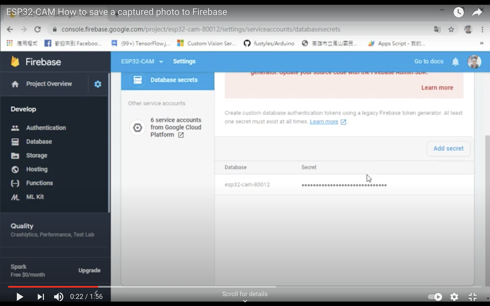
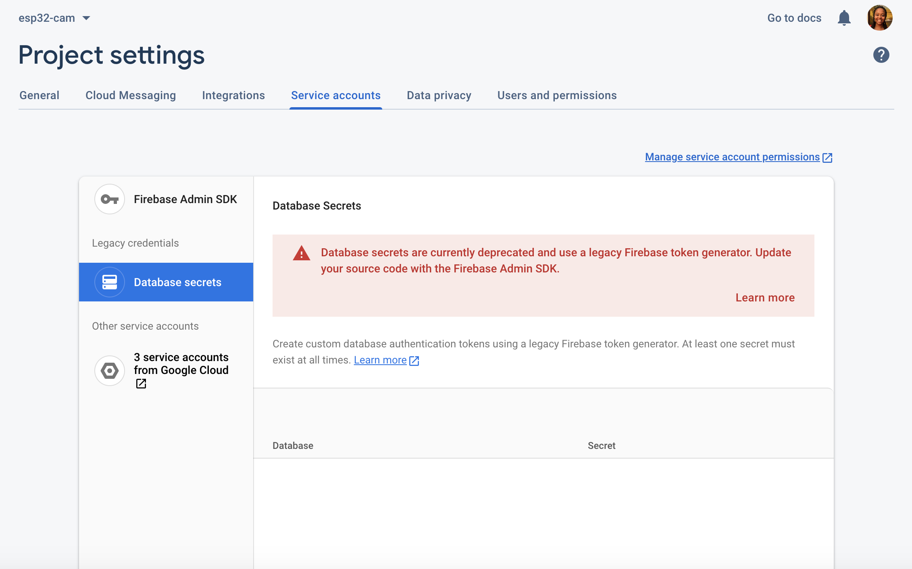
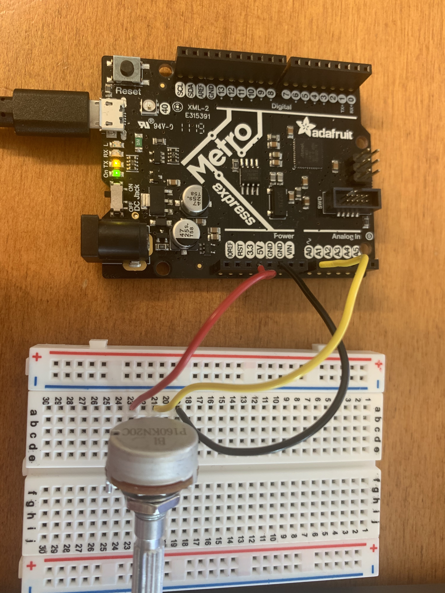
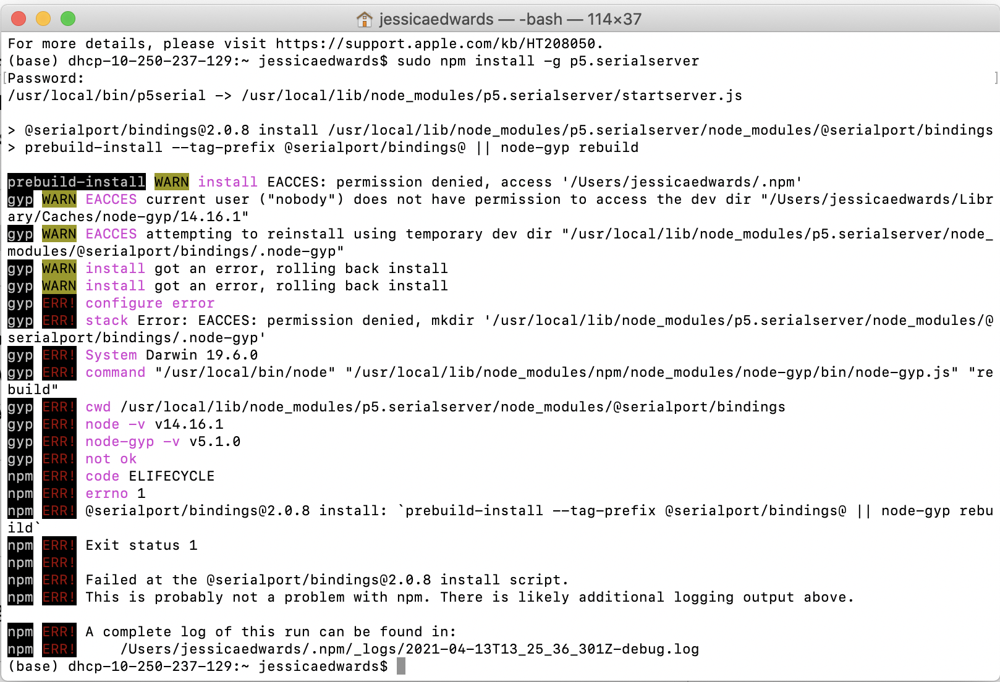
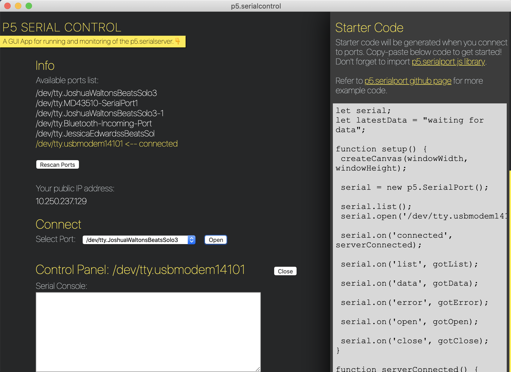

This week’s assignment was to send data to a computer and write code to display results. I ended up creating a graph using potentiometer data as my final result, but I went through several examples and challenges before getting to this result.
I followed this tutorial at first but I had some trouble obtaining the secret key from Firebase and uploading the code from the GitHub to my device. For some reason, when I clicked on Project Settings → Service Accounts → Database Secrets, I couldn’t see the page in the tutorial where it shows you the secret key and database ID or the ‘Add Secret’ button.
Tutorial: 
My Firebase Page: 
I tried downloading a JSON file that contained what looked like a secret key by clicking ‘Generate New Private Key’ in the Firebase Admin SDK tab and inserting that in this Arduino source code, but then I got another error: Error: no matching function for call to 'FirebaseESP32::pushJSON(FirebaseData&, String&, String&)'
After making sure several libraries were installed (Firebase Arduino based on WiFi101, Firebase Arduino based on WiFiNINA, Firebase Client Library for ESP8266 and ESP32, Firebase ESP32 Client, and ArduinoJSON), researching the error, and still not getting it to work, I decided to move on to one of the several examples on the page.
There were several projects that seem like they would be very cool to work
on in the future, and I spent a good amount of time just reading through
some examples.
I ended up deciding to solidify the basics with the P5 serial example which took me much longer than expected to get up and running. I mainly walked through this Serial Input to P5.js tutorial to visualize sensor data from the potentiometer using the Adafruit Metro M0 Express Board, three wires, a breadboard, and a potentiometer. I wired the middle pin of the potentiometer to A0, one pin to 3.3V, and one bin to GND on the Metro board.
I uploaded the following code to the Metro board then explored how to get the browser up and running:
void setup() {
Serial.begin(9600); // initialize serial communications
}
void loop() {
int potentiometer = analogRead(A0); // read the input pin
int mappedPot = map(potentiometer, 0, 1023, 0, 255); // remap the pot value to fit in 1 byte
Serial.write(mappedPot); // print it out the serial port
delay(1); // slight delay to stabilize the ADC
}
I wanted to try running the P5 server on the command line, but it took me a while to find how to do this since it wasn’t included in the tutorial I was following. Once I did find it here in the ‘Running the P5 Server on the Command Line Section’ and here, I tried both command line examples but couldn’t get either of them to work.
I gave up on this method and switched to downloading the p5.serialcontrol application instead. Chrome wouldn’t let me download the application due to privacy concerns, so I had to download it using Safari and then go to System Preferences → Security and Privacy on my MacBook in order to open the application.
Once I opened the application, I was able to get everything up and running! I connected to my Metro board on port ‘/dev/tty.usbmodem14101’.
Now that the server was running, I was able to follow the rest of the
tutorial smoothly in order to print the potentiometer sensor value in text on the screen.
I printed the list of ports using a function called printList() and
displayed the data as a string within the draw() function.
Now let’s try graphing the sensor value data! I first created a global variable called xPos to track the x-position of the latest graph line.
let serial; // variable to hold an instance of the serialport library
let portName = '/dev/tty.usbmodem14101'; // fill in your serial port name here
let inData; // for incoming serial data
let serialDiv; // an HTML div to show incoming serial data
let xPos = 0; // x position of the graph
Then I made a function called graphData() that takes in a number
value as a parameter, draws a line that’s mapped to the number value,
and increments xPos so the next line is further along. When xPos is at
the right edge of the screen, it resets the background().
function graphData(newData) {
// map the range of the input to the window height:
var yPos = map(newData, 0, 255, 0, height);
// draw the line in a pretty color:
stroke(0xA8, 0xD9, 0xA7);
line(xPos, height, xPos, height - yPos);
// at the edge of the screen, go back to the beginning:
if (xPos >= width) {
xPos = 0;
// clear the screen by resetting the background:
background(0x08, 0x16, 0x40);
} else {
// increment the horizontal position for the next reading:
xPos++;
}
}
Finally I called only graphData(inData) in the draw() function and got a graph!
Overall, I had a fun time overcoming some challenges and discovering what goes into establishing serial communication to a web page in a browser. I really enjoyed exploring all of the different avenues to apply these software and hardware combos, particularly P5 and the Metro M0 Express board, and I hope to explore them further soon!